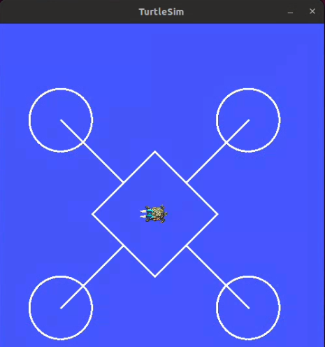

3.1. ROS Selection Task 2025-2026
3.1.1. Problem statement
The objective of the task is to move the turtle inside the turtlesim window in a shape shown below.
To acheive this task you are supposed to create a node named
/node_turtle_movewithin a python script,node_turtle_move.pyDont worry if you are new to ROS or Linux(Ubuntu), the task is fairly simple and we have provided you with ample resource and tutorials in this WIKI to the complete this task so only a strong will and a little bit of brains is required to get the work done. Also even though this just a weekend task we have provided ample amount of time so that you guys can freely manage your time in order to complete the task.

Note
All the resources to complete the said task are provided in the ROS section of ATOM WIKI. So make sure to check it out if you are new to ROS2.
Warning
The Deadline for completing the task is 26th September, 2025.
3.1.2. Expected Output
3.1.3. Hints
The turtle needs to move in a above shown shape .
You can refer POSE to learn more about pose function.
You can refer TWIST to learn more about twist function.
Use linear velocity and angular velocity to get this done.
Use the premade topics and services of the turtlesim_node package to make the task easy. However you can always continue with your own custom topics and services.
Keep tracking the position and distance travelled so as to perfectly draw the desired shape. You can refer to Overview of rclpy for more hint
3.1.4. Sample Code Snippet
Question: Write a python code to move ROS’s turtlesim bot in a circle shape.
#!/usr/bin/env python3
import rclpy
from rclpy.node import Node
from geometry_msgs.msg import Twist
from turtlesim.msg import Pose
import math
class RotateTurtleOneTurn(Node):
def __init__(self):
super().__init__('rotate_turtle_one_turn')
self.cmd_pub = self.create_publisher(Twist, '/turtle1/cmd_vel', 10)
self.pose_sub = self.create_subscription(Pose, '/turtle1/pose', self.pose_callback, 10)
self.prev_theta = None
self.cumulative_rotation = 0.0
self.rotation_done = False
self.angular_speed = 1.0
self.linear_speed = 1.0
self.timer = self.create_timer(0.01, self.rotate)
def pose_callback(self, msg):
"""Track how much the turtle has rotated in total."""
current_theta = msg.theta
if self.prev_theta is None:
self.prev_theta = current_theta
return
delta = current_theta - self.prev_theta
if delta > math.pi:
delta -= 2 * math.pi
elif delta < -math.pi:
delta += 2 * math.pi
self.cumulative_rotation += abs(delta)
self.prev_theta = current_theta
def rotate(self):
twist = Twist()
if not self.rotation_done:
twist.linear.x = self.linear_speed
twist.angular.z = self.angular_speed
self.cmd_pub.publish(twist)
if self.cumulative_rotation >= 2 * math.pi:
twist.linear.x = 0.0
twist.angular.z = 0.0
self.cmd_pub.publish(twist)
self.rotation_done = True
self.get_logger().info("Completed one full revolution!")
def main(args=None):
rclpy.init(args=args)
node = RotateTurtleOneTurn()
rclpy.spin(node)
node.destroy_node()
rclpy.shutdown()
if __name__ == "__main__":
main()
3.1.5. Procedure
Create Workspace Open a terminal and create a new ROS 2 workspace named
turtle_ws:mkdir -p ~/turtle_ws/src cd ~/turtle_ws/src
Create Python Package Inside turtle_ws/src, create a new package named selection_task:
ros2 pkg create --build-type ament_python selection_task
This will generate the basic package structure.
Add Python Files Inside the selection_task/selection_task/ directory:
Ensure there’s an init.py file (can be empty)
- Create:
node_turtle_move.pyComplete your script ethically for the better understanding of the underlying concepts for drawing the desired shape .
- Edit To run both files with ros2 run, edit the setup.py so it contains:
entry_points={ 'console_scripts': [ 'node_turtle_move = selection_task.node_turtle_move:main', ], },
Replace
mainwith the actual function name that starts your node in each file.
Build the Workspace From the root of your workspace:
cd ~/turtle_ws colcon build
Source the workspace:
source install/setup.bash
Run the Simulation
Start Turtlesim
ros2 run turtlesim turtlesim_nodeRun
node_turtle_move.pyin a new terminal:cd ~/turtle_ws source install/setup.bash ros2 run selection_task node_turtle_move.py
After Running this script , you should probably see your turtle moving on the window while drawing the desired shape.
3.1.6. Running the Nodes
Terminal Method Open separate terminals for each node
Launch File Method Create a launch file to run multiple nodes:
You can either run them in separate terminals or simply create a
selection_task.launch.pyfile inside the~/turtle_ws/src/selection_task/launch/folder.Launch files can run multiple nodes unlike a python/cpp script.
Run the launch file to execute two processes in parallel.
See also
Please refer to the tutorials and resouces given in the wiki or visit the official ROSWIKI if you need help with anything regarding ROS2.
Head over to Submissions to submit your work